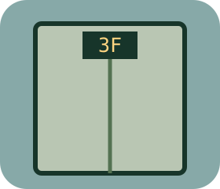

COMEDY LAB / 04
電梯社交地獄
只有三層樓，尷尬卻直達頂樓

這次怎麼鬧
三層樓、六幕對話。先選站位再開口：認錯人、告別後同路、肚子叫假裝手機響，會改變下一幕的回覆與可用台詞。
每次站位與說話都影響虛構尷尬值，最後有平安出梯／都市傳說／尷尬建國三種結局。不是社交或人格評分，不必只選最有禮貌的話。
全為虛構玩具舞台；不操作真實物件、不連接AI／外部服務。無帳號、永久儲存或上傳，重新整理清空本輪。
COMEDY LAB / 04
只有三層樓，尷尬卻直達頂樓

三層樓、六幕對話。先選站位再開口：認錯人、告別後同路、肚子叫假裝手機響，會改變下一幕的回覆與可用台詞。
每次站位與說話都影響虛構尷尬值，最後有平安出梯／都市傳說／尷尬建國三種結局。不是社交或人格評分，不必只選最有禮貌的話。
全為虛構玩具舞台；不操作真實物件、不連接AI／外部服務。無帳號、永久儲存或上傳，重新整理清空本輪。